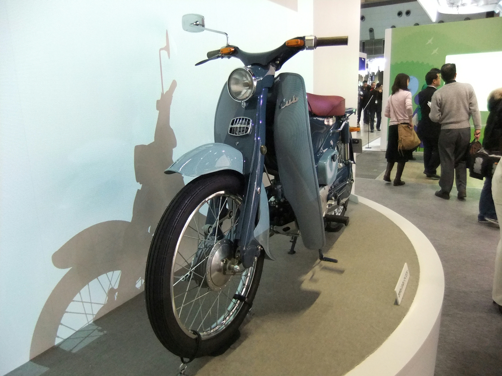

Saturday · Business
: how the smaller player wins
, , , and — then , , and as cases, used only for the facts named public sources actually state.
.jpg){kind=link}
This is a strategy-framework lesson, not a biography of three firms and not a promise that underdogs win. Claims about , , and are traced to named public pieces: essays, an HBS case abstract, and a anniversary account. Operating statistics that those pages do not state are omitted. “” is a metaphor. It is not a dataset.
Select any words, or tap a dotted term.
- 1958–59 Small machines in Japan; the next year. : the large copier would later be slow to leave.
- 1963 Niceness ’s U.S. line: “.” A different rider than ’s.
- 1971 Southwest First flights in Texas: , not a miniature major.
- 1979–80 Porter “”; then and the generic-strategy triad.
- 1995–96 HBR and on (/ in the list); , “” ( vs ).
- 1999–2001 Judo and in ; and Kwak’s book. Movement, balance, leverage — use the larger rival’s weight rather than matching it.
The problem
Why matching a larger rival head-on usually fails
A smaller player who attacks an where the is already strong is usually volunteering to lose. The larger firm has the customers, the dealers, the plant, the brand, and the lawyers. Matching it blow for blow is a trial of strength. Judo, in the martial-art sense and Kwak borrow, is the opposite idea: do not oppose strength to strength. Use the other side’s size against it.
That is the problem this lesson is for. Not “how to be inspiring.” Not a tour of three beloved companies. The question is narrower: when the other side is larger, where do you stand so that their size becomes slow?
The framework
Three strategy tools, each from a named essay
Three named tools, from named essays, because a Saturday business lesson that invents a framework is just a slogan.
, as and put it in “” (, January–February 1999), is how a fast entrant takes on a dominant without a sumo match. The 2001 book with spells the principles as movement, balance, and leverage: define a space the larger firm is slow to enter, refuse a tit-for-tat that favors its size, and turn its assets — dealers, legacy product, current customers — into things it cannot abandon quickly. The essay’s examples are of their internet moment ( and , among others). The pattern is older than the browser.
, in and ’s “” (, January–February 1995), are offers that today’s best customers reject. Leading firms, the essay says, invest aggressively in what those customers already want. They are late to what looks worse on the old scorecard. and ’s list is blunt: “ let create the small-copier market.” The later classroom word is . The 1995 mechanism is the one this lesson uses: the is strong, therefore slow, because the wrong customers are speaking.
, in ’s (1980), is one of three : be different in a way buyers will pay for, rather than only cheaper. The tighter public statement is “” (, November–December 1996). Operational effectiveness is not strategy. Strategy is a unique position, the trade-offs that come from choosing what not to do, and fit among activities. ’s is not a mood. It is a system. His is what happens when a larger airline copies a few pieces and keeps the rest of the old machine. is one weapon inside that system — a different customer, a different product, a different activity set — not a logo exercise.
Read the three together and the pattern is one sentence: do not attack the place the larger firm is already strongest; attack the thing it cannot leave without becoming a different company. ’s 1979 essay “” is the prior question — what industry are you even standing in — before you pick a fight.
The cases
Three company cases, used only for the facts the sources state
versus is the small-bike case. ’s 12 July 2009 anniversary piece, “,” puts on Pico Boulevard in 1959, facing a market whose available machines were Harley-Davidsons or British bikes. ’s larger models did not do the job those riders already had. The — the small , the in American speech — did a different job for a different person. The 1963 line “” is the public face of that choice. The Times calls it attacking with niceness. In framework language: movement into a space ’s identity made expensive to enter, and a product differentiated by who was allowed to look normal on it.
The story is also a warning about hindsight. The HBS case (384049, 1983) tells the U.S. rise in part through the ’s (1975) — a planned, scale-curve . ’s “” (, 1984) is the other file: executives who said they had no strategy beyond seeing whether they could sell something, large bikes that failed on American roads, Super Cubs used as staff transport until strangers asked where to buy them. The is the name of that argument. Use the case. Do not pretend the slide was written in 1959.

{kind=link}
versus the U.S. majors is the activity-system case. First flights in 1971, Texas, among the founders. The public abstract of Vijay Govindarajan and Julie Lang’s case states the skeleton this lesson is allowed to use: short-haul, , a cost structure the majors did not have. ’s 1996 essay is the framework reading: one aircraft type, the ; a network that did not worship ; trade-offs a full-service major could not make without wrecking the rest of its system. ’s 2019 remembrance, “,” is for the person, not for a turnaround-minute that this lesson will not invent. , in , is the larger airline that picked up a few of the pieces and kept the old system on.
{kind=link}
versus is the case already named in and . The had made large, often leased, plain-paper copying a corporate center. Those customers wanted more of that. A small copier looked like a worse 914. (and, in the wider history, other Japanese firms) made the small machine for offices that did not have a copy center. ’s strength — the installed base, the service revenue, the definition of a serious copier — was the reason to wait. The 1995 essay’s sentence is the claim: let create the small-copier market. This lesson does not add a unit count the essay does not give.
Limits
What the pattern does not explain
Judo does not mean the small player is wiser. Sometimes the larger firm is right, and the new offer stays a toy. ’s pattern is famous enough to be over-applied: not every cheaper product is a disruptive technology, and not every who ignores a niche is about to die. ’s fit can become a prison; the same activity system that could not copy can, later, be a reason not to change when the industry does. and others have since used itself as a caution about treating a case as eternal. That later argument is not this lesson’s exhibit. It is a reminder that a framework is a lens, not a prophecy.
’s two files — and Pascale — are the honest ending. A smaller player can win by attacking where the is strong and therefore slow. A smaller player can also win because a large bike broke, a clerk asked about the cub, and someone at wrote a line about nice people. Strategy writing after the fact is very good at turning the second story into the first. The job is to keep both stories in view.
After
The companies changed; the advice is still about not copying a larger rival’s strengths
The 1999 judo essay was written for internet time. The 1995 essay was written for disk drives and copiers and excavators. ’s 1996 is a system that later managers have been tempted to unpick. The pattern — do not fight the larger firm where it is already strongest — is what remains worth teaching on a Saturday. The companies are evidence. They are not saints.
A question
A question to keep asking
If the ’s strength is also the reason it cannot move, what would count as evidence that you are the smaller player with a real opening — and not just the next ?
Fun fact
Continental Lite copied the easy pieces
In “” ’s warning is not that was mysterious. It is that a major could copy a fare, a smile, or a 737 and still fail, because the advantage was the fit among activities — what the major would have to stop doing. is his named exhibit of a partial imitation. A larger airline can borrow one piece of a smaller rival’s system and still be a larger airline with the old system attached.